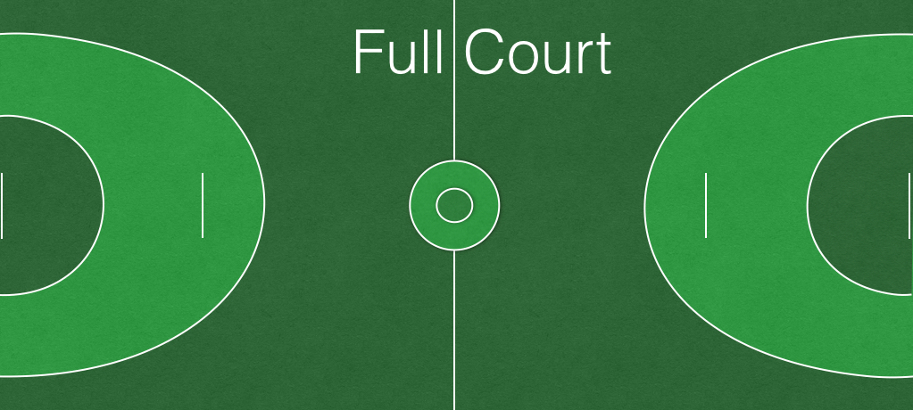

Ping Pong Soccer launches the fast pace of ping pong and the team strategy of soccer to the field. In it's simplest form, all you need is one goal, four willing participants, a ping pong ball, and paddles for all! Between you and your teammate(s), you just need to get the ball in the net. But there's a catch! In order to move, you need to dribble the ball against your paddle through your opponent's stout defense.
So what happens when the ball hits the ground? Well, that depends. Almost always it will result in a "free pass." The last team to touch the ball (with their paddle or their body) loses control of the ball and the opposing team earns the free pass. A "free passer" is allowed to pivot around on one foot, but can not leave his/her initial position until he/she has passed the ball in. The free passer is also prohibited from shooting directly on the goal. However, as soon as the ball makes contact with any player other than the free passer, a goal will count towards the appropriate team's score. A free pass is only earned if the ball falls within the boundaries of the game and not inside the "crease." (Discussed in more detail below under the "Free Shot" section)
In the event that the ball falls outside the boundaries of the game, the team who earns control of the ball, can choose to take possession. In the case of a half-court game, this would mean taking the ball from outside the clearing line and having the privilege to dribble the ball in instead of having to pass. The team earning the free possession also has the right to have a free pass from where the ball first went out of bounds if they so choose, but all of the free pass rules still apply.
Finally, the ball can land in one additional zone: the crease. If the ball lands within the crease and it would be the offensive team who would earn the free pass, then it actually results in a free shot. This is most like a penalty shot in soccer. It is one defensive player playing goalie against one offensive player shooting on him/her from the free shot line. Once the ball deflects off of the goalie or a post of the goal, the ball is in play. If the goalie deflects the ball and the ball hits the ground, it results in a free pass for the defensive team.
From here the game can be played in one of two styles as you can see below depending on how many people you have and the amount of equipment.
If you have 4-7 players, and/or access to only one goal, we recommend a half-court game. With this setup, there are a number of specialized rules, but don't fret, many of them mimic the rules of any other half-court game like basketball.
Importantly, there is a clearing line. Whichever team is the last team to touch the ball when the ball crosses over the clearing line into the offensive half, maintains possession until the other team brings the ball across the clearing line. With possession, a team can score, otherwise it would be an own goal and a point for the opposing team.
As alluded to previously, you can play the half-court style game with an odd number of players, making one of the players full-time goalie. The goalie in this setup is treated like a full member of the defensive team at any given moment with all of the rules of a free pass or a free shot applying to him or her as if he or she were a member of the defensive team.
With more players than a 3v3 game would allow, we have found a half-court setup to be too crowded. This is where the full-court setup comes in. If you have access to two goals and enough willing participants, the full-court game is a much more fluid sport that more closely resembles the faster paced version of soccer.
Remember that the game is meant to be played in a relaxed, pickup setting, so don't let these rules deter you from playing! There are a number of ways to adapt the game to play anywhere. But, in the event of a tournament style setting or if you have access to everything you need, these are simply the rules that the experts (that's us) have found to be most fun and fair.